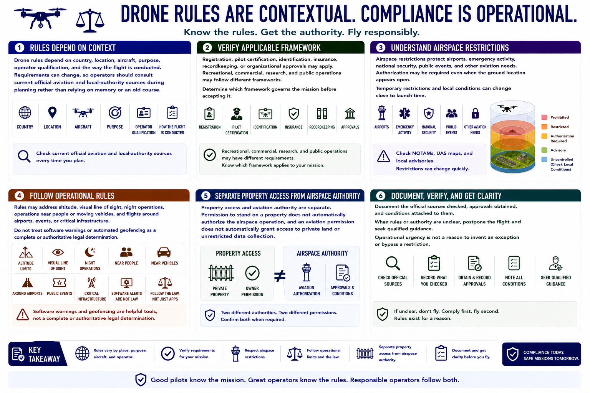

Regulations and Operating Rules
Connecting to LMS... Progress: in progress

Narration
Drone rules depend on country, location, aircraft, purpose, operator qualification, and the way the flight is conducted. Requirements can change, so operators should consult current official aviation and local-authority sources during planning rather than relying on memory or an old course.
Registration, pilot certification, identification, insurance, recordkeeping, or organizational approvals may apply. Recreational, commercial, research, and public operations may follow different frameworks. Determine which framework governs the mission before accepting it.
Airspace restrictions protect airports, emergency activity, national security, public events, and other aviation needs. Authorization may be required even when the ground location appears open. Temporary restrictions and local conditions can change close to launch time.
Rules may address altitude, visual line of sight, night operations, operations near people or moving vehicles, and flights around airports, events, or critical infrastructure. Do not treat software warnings or automated geofencing as a complete or authoritative legal determination.
Property access and aviation authority are separate. Permission to stand on a property does not automatically authorize the airspace operation, and an aviation permission does not automatically grant access to private land or unrestricted data collection.
Document the official sources checked, approvals obtained, and conditions attached to them. When rules or authority are unclear, postpone the flight and seek qualified guidance. Operational urgency is not a reason to invent an exception or bypass a restriction.